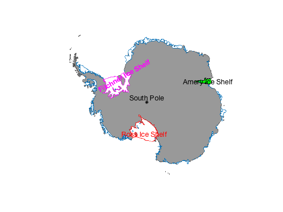
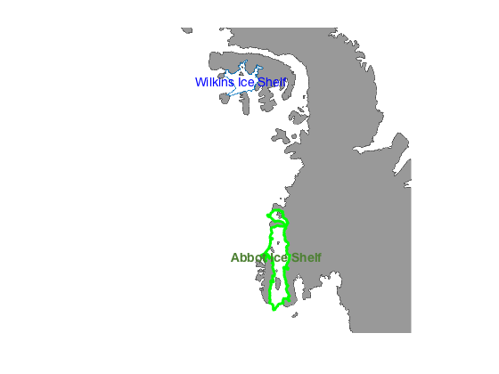
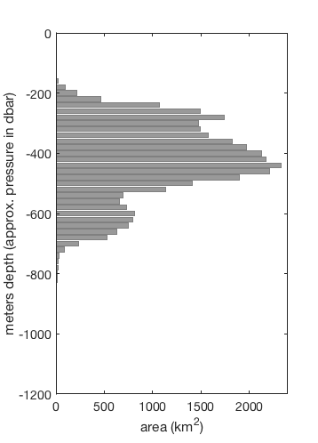

outlineashelf documentation
The outlineashelf function outlines the ice shelf 'shelf' on a map of Antarctica.
An overview of Bedmap2 functions for AMT can be found here.
Contents
Syntax
outlineashelf('ShelfName')
outlineashelf(...,'LineProperty',LinePropertyValue)
h = outlineashelf(...)
[h,lat,lon] = outlineashelf(...)Description
outlineashelf('ShelfName') outlines the shelf declared by 'ShelfName'. Ice shelf choices are limited to the choices below. Some ice shelves are plotted together with adjacent ice shelves. 'ShelfName' can be:
- 'abbot' Abbot Ice Shelf
- 'amery' Amery Ice Shelf
- 'bach' Bach Ice Shelf
- 'baudouin' Baudouin, Borchgrevink, & Lazarev Ice Shelves
- 'conger' Conger Ice Shelf
- 'cook' Cook Ice Shelf
- 'cosgrove' Cosgrove Ice Shelf
- 'crosson' Crosson & Dotson Ice Shelf
- 'dibble' Ice Shelf
- 'dotson' Crosson & Dotson Ice Shelf
- 'drygalski' Drygalski Ice Tongue
- 'fimbul' Fimbul (Fimbulisen), Atka, & Ekstrom Ice Shelf
- 'fris' Filchner-Ronne Ice Shelf
- 'george vi' George VI Ice Shelf
- 'getz' Getz Ice Shelf
- 'holmes' Holmes Glacier
- 'land' Land & Nickerson Ice Shelf
- 'larsen b' Larsen B Ice Shelf
- 'larsen c' Larsen C & Larsen D Ice Shelf
- 'larsen d' Larsen C & Larsen D Ice Shelf
- 'larsen e' Larsen E Ice Shelf
- 'mariner' Mariner Glacier Tongue
- 'mertz' Mertz Glacier Tongue
- 'muis' Moscow University Ice Shelf
- 'nansen' Nansen Ice Shelf
- 'nickerson' Nickerson & Land Ice Shelf
- 'ninnis' Ninnis Glacier Tongue
- 'nivl' Nivl (Nivilisen) Ice Shelf
- 'pig' Pine Island Glacier shelf
- 'prince harald' Prince Harald Ice Shelf
- 'publications' Publications Ice Shelf
- 'quar' Quarisen
- 'rayner' Rayner & Thyer Ice Shelf
- 'rennick' Rennick Bay Ice Shelf
- 'riiser' Riiser-larsen, Stancomb, & Brunt Ice Shelf
- 'ross' Ross Ice Shelf
- 'shackleton' Shackleton, Tracy/Tremenchus Ice Shelf
- 'stange' Stange Ice Shelf
- 'sulzberger' Sulzberger Ice Shelf
- 'swinburne' Swinburne Ice Shelf
- 'thwaites' Thwaites Glacier Tongue
- 'totten' Totten Glacier
- 'tracy' Tracy, Tremenchus, & Shackleton Ice Shelf
- 'venable' Venable Ice Shelf
- 'vigrid' Vigridisen or Vigrid Ice Shelf
- 'vincennes' Vincennes Bay Ice Shelf
- 'west' West Ice Shelf
- 'wilkins' Wilkins Ice Shelf
- 'all' equivalent to bedmap2('shelves')
outlineashelf(...,'LineProperty',LinePropertyValue) sets outline properties.
h = outlineashelf(...) returns the handle h of the shelf outline.
[h,lat,lon] = outlineashelf(...) returns lat,lon coordinates of the outline of an ice shelf.
Example 1
Here we plot all ice shelfes and highlight Ross by making it red and plot FRIS in magenta. We'll also make Amery a green patch object.
bedmap2('patchgl'); outlineashelf('all'); % (equivalent to the command bedmap2('shelves'); ) [~,alat,alon] = outlineashelf('amery'); patchm(alat,alon,'green') scarlabel('Amery Ice Shelf'); outlineashelf('ross','color','red'); scarlabel('Ross Ice Shelf','color','red'); outlineashelf('filchner','color','m','linewidth',1); scarlabel('Filchner Ice Shelf','color','m','fontweight','bold','rotation',30); scarlabel('South Pole','marker','k*');
Plotting Filchner-Ronne Ice Shelf together
Example 2
Here we create a map of the Antarctic peninsula, outline Wilkins Ice Shelf in blue, and outline Abbot Ice Shelf with a heavy green line:
figure bedmap2 'patchgl' mapzoom(-72,-85,'mapwidth',1500) outlineashelf wilkins scarlabel('Wilkins Ice Shelf','color','blue') outlineashelf('Abbot','color','g','linewidth',3) scarlabel('Abbot Ice Shelf','color',[.3 .5 .2],... 'fontweight','bold')
Example 3: Data analysis
To understand how an ice shelf may respond to ocean forcing, it can be useful to know how much of the ice shelf's base lies above or below the local thermocline. Here we pair the bedmap2_data function with outlineashelf to recreate Figure 4d from Jacobs et al.'s 2013 paper, Getz Ice Shelf melting response to changes in ocean forcing.
First, we import the full 1 km resolution Bedmap2 ice surface and thickness data. Note that Matlab sometimes gets confused if a variable is named sfc, so here we avoid this problem by naming our surface elevations sfz. Although no map has been initialized, the outlineashelf function may be used to return the lat/lon values of the Getz Ice Shelf perimeter. The built-in Matlab function inpolygon is then used to determine the indices of the Bedmap2 grid corresponding to Getz Ice Shelf. The basal elevations of these data points are then plotted as a histogram. Because the Bedmap2 data set is a 1 km by 1 km grid, the count of raster data points corresponds to square kilometers of area.
close all % closes previous figures % Define a centerpoint: [glat,glon] = scarloc('getz ice shelf'); % Get Bedmap2 elevation data centered on Getz: [lat,lon,sfz] = bedmap2_data('surface',glat,glon,500); thck = bedmap2_data('thickness',glat,glon,500); % Get perimeter of Getz Ice Shelf [~,getzlat,getzlon] = outlineashelf('getz'); % Find indices of Bedmap2 data inside Getz perimeter: getzind = inpolygon(lat,lon,getzlat,getzlon); % Ice shelf base elev. is surface elev. minus thickness: getzBaseElevation = sfz(getzind)-thck(getzind); % Calculate number of grid cells corresponding to depths: depth = -1200:20:0; % meters, ~dbar pressure ncount = hist(getzBaseElevation,depth); % Generate plot: figure('position',[100 100 358 498]); barh(depth,ncount,... 'facecolor',.6*[1 1 1],... 'edgecolor',.5*[1 1 1]) axis([0 2400 -1200 0]) ylabel('meters depth (approx. pressure in dbar)'); xlabel('area (km^2)')
References
If this function is useful for you, please cite the following:
Fretwell, P., et al. "Bedmap2: improved ice bed, surface and thickness datasets for Antarctica." The Cryosphere 7.1 (2013). http://dx.doi.org/10.5194/tc-7-375-2013
Greene, C. A., Gwyther, D. E., & Blankenship, D. D. (2016). Antarctic Mapping Tools for Matlab. Computers & Geosciences. http://dx.doi.org/10.1016/j.cageo.2016.08.003
Author Info
The Bedmap2 Toolbox for Matlab and supporting documentation were created by Chad A. Greene of the University of Texas at Austin's Institute for Geophysics (UTIG).